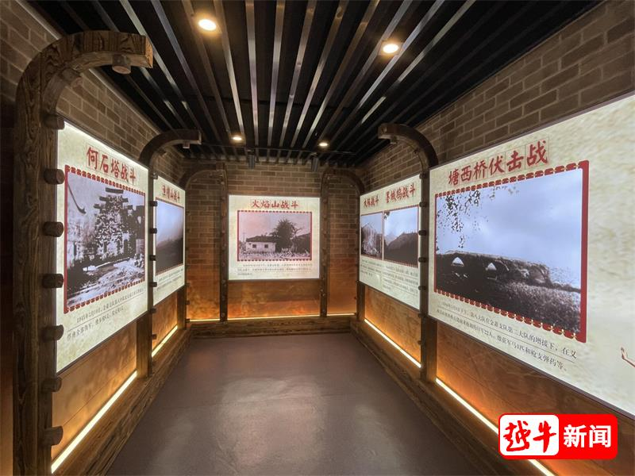
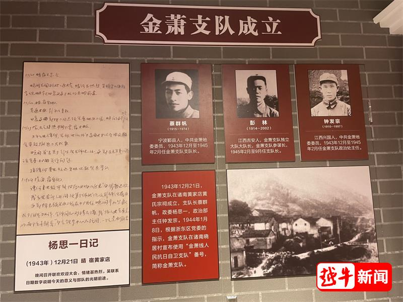

傅红德（1926-1944），义乌楂林人，出身贫苦农民家庭，16 岁时目睹日军烧毁家园、杀害亲人，毅然加入抗日武装。1943 年冬，他随部队编入新成立的金萧支队，成为特务中队的一名战士，因作战勇敢、手脚麻利，被战友亲切称为 “小豹子”。
1944 年 1 月 20 日，金萧支队奉命参加嵊县苦竹溪战斗，伏击日军运输队。傅红德所在班担任突击任务，负责抢占山腰制高点。战斗打响后，日军依托巨石顽强抵抗，支队进攻受阻，多名战士负伤。此时傅红德发现日军侧后方有一处缺口，当即向班长请战：“我去绕后偷袭，你们正面掩护！” 他抱着炸药包，借着茅草掩护匍匐前进，在接近日军阵地时被发现，密集的子弹打中他的左臂。


鲜血顺着衣袖流淌，傅红德却咬牙坚持，奋力将炸药包扔向日军火力点。“轰” 的一声巨响，日军机枪哑火，支队趁机发起冲锋。就在此时，残余日军的冷枪击中了傅红德的胸膛，他倒在血泊中，手中仍紧握着上了刺刀的步枪。战后清理战场时，战友在他口袋里发现一张揉皱的纸片，上面是他用铅笔写的遗言：“我没给家人丢脸，没给支队丢脸。” 这一年，傅红德年仅 18 岁。
傅红德的牺牲并非个例，在金萧支队的革命历程中，共有 400 余名像他这样的青年为民族解放献出生命。纪念馆 “百折不挠” 展区为傅红德设立专题展柜，陈列着他用过的刺刀、战友捐赠的回忆手稿，成为诠释 “革命理想高于天” 的生动教材。他的故事印证了马克思主义 “个人在历史中虽为个体，却能汇聚成推动历史前进的集体力量” 的观点，普通战士的牺牲与奉献，共同铸就了革命胜利的根基。
返回